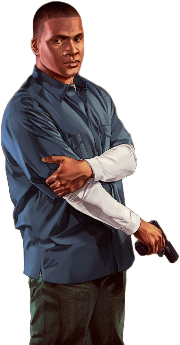
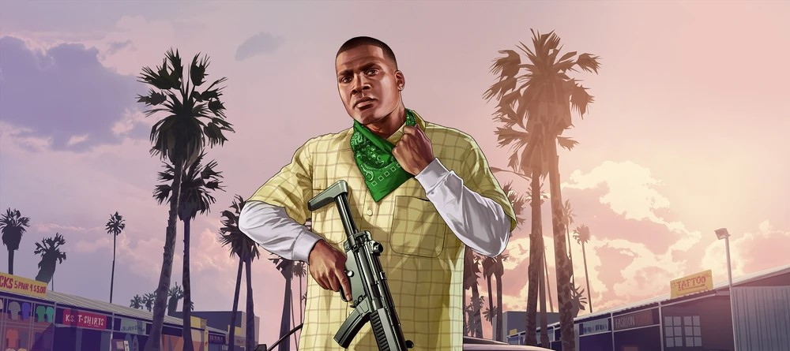

Franklin Clinton is a young, ambitious hustler from the streets of Los Santos.
Working as a repo man for a shady car dealership, he dreams of escaping the cycle of poverty and petty crime.
Franklin's excellent driving skills and determination make him an invaluable member of the crew.
He quickly forms a mentor-mentee relationship with Michael, learning the art of high-stakes heists while navigating the complexities of loyalty and ambition.

The hustler finding his way out of poverty
Franklin Clinton, born and raised in the rough neighborhoods of South Los Santos, is a determined young hustler striving to break free from a life of petty crime. As a former gang member turned repo man, Franklin dreams of a future beyond the streets, where wealth and respect are earned through ambition rather than violence.
Despite his skills as a driver and his street smarts, Franklin struggles with the influence of his old environment. His friendships and family ties are complicated, often pulling him back into the chaos he seeks to escape.
However, his encounter with Michael De Santa offers a chance at something greater. Michael becomes a mentor to Franklin, guiding him through high-stakes heists that demand precision, cunning, and nerves of steel.
Throughout the story, Franklin acts as the grounding force of the trio, balancing Michael's calculated schemes and Trevor's unhinged chaos. His journey is one of ambition, loyalty, and self-discovery, as he navigates the dangerous world of Los Santos in pursuit of his dream to rise above the life he once knew.

Franklin Clinton as visible on the loading screen of the game.
You get what you work for, not what you wish for.
Franklin Clinton
Showcasing Franklin’s no-nonsense mindset, this line encapsulates his belief in effort over entitlement, a defining trait of his rise from the streets.